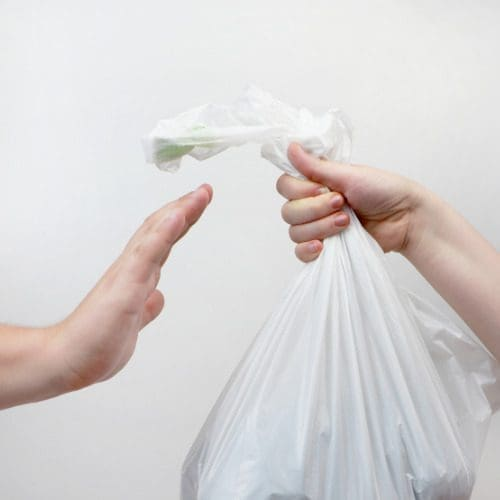
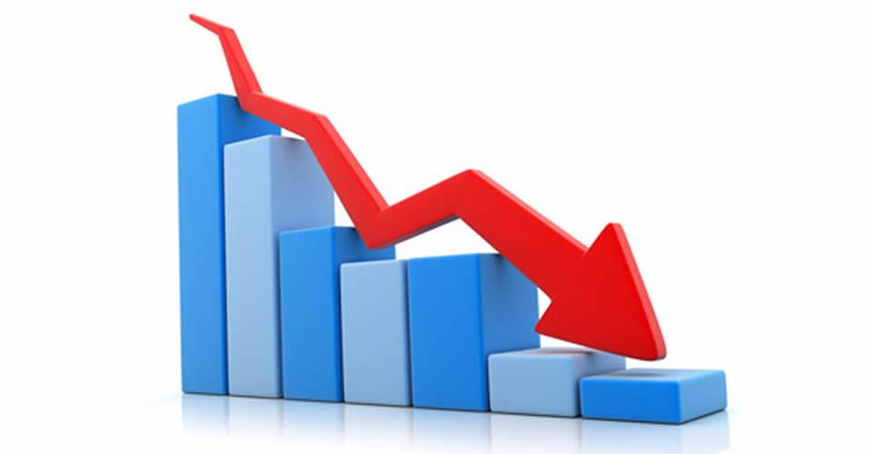
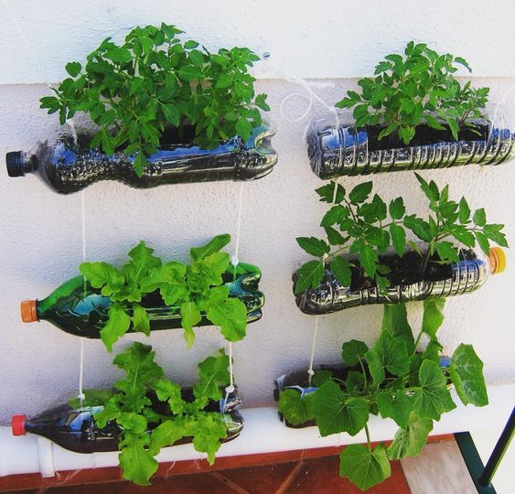
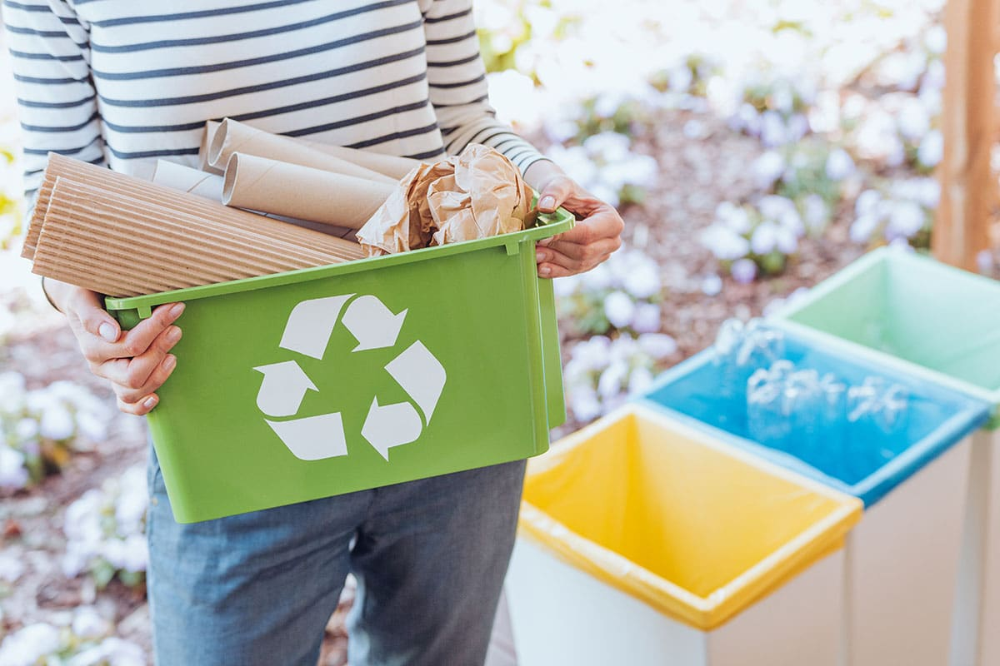

O que são os 5 Rs?
Os 5 Rs são uma política que visa reduzir a geração de resíduos no nosso planeta,
fazendo com que cada um de nós mude o comportamento diante do consumo e a forma que lida com os resíduos gerados.
Os 5 Rs consistem em cinco palavras: repensar, recusar, reduzir, reutilizar e reciclar.
Aqui estão exemplos de cada R.
Cada pessoa deve repensar suas práticas em relação ao meio ambiente. Devemos repensar, por exemplo, nosso consumo e como fazemos o descarte dos nossos resíduos. Repensar é o início dessa mudança.

Chama-se a atenção para o consumismo — a aquisição de bens que não são necessários — e também para que sejamos críticos em relação ao que consumimos. Devemos pensar em adquirir apenas aquilo que realmente necessitamos e, de preferência, de empresas preocupadas com o meio ambiente.
Diz-se respeito, principalmente, ao nosso comportamento consumista. “Eu preciso realmente disso?” Faça essa pergunta sempre que for adquirir um novo produto. Além disso, reduzir significa poupar. Devemos saber economizar quando o assunto são os nossos recursos naturais. Esse é o caso, por exemplo, da água potável, que é, muitas vezes, utilizada de maneira indiscriminada.
É possível utilizar novamente alguns objetos que seriam descartados. Algumas embalagens podem ser reaproveitadas ou mesmo utilizadas para outras finalidades.
Trata-se do reaproveitamento de um produto de modo que ele se torne matéria-prima para a fabricação de outro objeto. Reciclar é importante, pois ajuda a reduzir a quantidade de lixo gerado e também reduz a utilização dos nossos recursos naturais. Entre os materiais que podem ser reciclados estão: o papel, o plástico e o alumínio.
